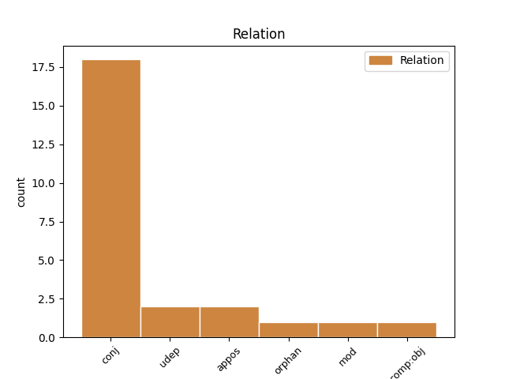
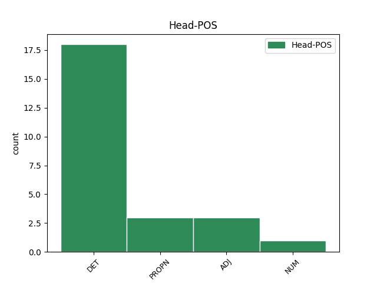
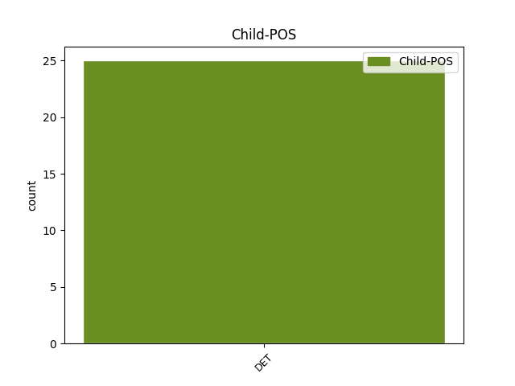

Distribution of features within this leaf



Agreement Rules sorted by frequency.
- When the dependent token is the conjunct(conj) of the head token, and the head token is DET and the dependent token is DET.
1 Hver hver DET _ Gender=Masc|Number=Sing|PronType=Tot 0 _ _ _
2 og _ _ _ _ 0 _ _ _
3 en en DET _ Gender=Masc|Number=Sing|PronType=Art 1 conj _ _
4 av _ _ _ _ 0 _ _ _
5 oss _ _ _ _ 0 _ _ _
6 skal _ _ _ _ 0 _ _ _
7 ha _ _ _ _ 0 _ _ _
8 mulighet _ _ _ _ 0 _ _ _
9 – _ _ _ _ 0 _ _ _
10 og _ _ _ _ 0 _ _ _
11 plikt _ _ _ _ 0 _ _ _
12 – _ _ _ _ 0 _ _ _
13 til _ _ _ _ 0 _ _ _
14 å _ _ _ _ 0 _ _ _
15 ta _ _ _ _ 0 _ _ _
16 vare _ _ _ _ 0 _ _ _
17 på _ _ _ _ 0 _ _ _
18 seg _ _ _ _ 0 _ _ _
19 og _ _ _ _ 0 _ _ _
20 sine _ _ _ _ 0 _ _ _
21 , _ _ _ _ 0 _ _ _
22 og _ _ _ _ 0 _ _ _
23 skal _ _ _ _ 0 _ _ _
24 vite _ _ _ _ 0 _ _ _
25 at _ _ _ _ 0 _ _ _
26 den _ _ _ _ 0 _ _ _
27 dagen _ _ _ _ 0 _ _ _
28 man _ _ _ _ 0 _ _ _
29 ikke _ _ _ _ 0 _ _ _
30 er _ _ _ _ 0 _ _ _
31 i _ _ _ _ 0 _ _ _
32 stand _ _ _ _ 0 _ _ _
33 til _ _ _ _ 0 _ _ _
34 det _ _ _ _ 0 _ _ _
35 , _ _ _ _ 0 _ _ _
36 vil _ _ _ _ 0 _ _ _
37 fellesskapet _ _ _ _ 0 _ _ _
38 stille _ _ _ _ 0 _ _ _
39 opp _ _ _ _ 0 _ _ _
40 . _ _ _ _ 0 _ _ _
1 Vi _ _ _ _ 0 _ _ _
2 møter _ _ _ _ 0 _ _ _
3 Peter Peter PROPN _ Gender=Masc 0 _ _ _
4 Tatchell _ _ _ _ 0 _ _ _
5 , _ _ _ _ 0 _ _ _
6 en en DET _ Gender=Masc|Number=Sing|PronType=Art 3 appos _ _
7 av _ _ _ _ 0 _ _ _
8 Justins _ _ _ _ 0 _ _ _
9 nærmeste _ _ _ _ 0 _ _ _
10 venner _ _ _ _ 0 _ _ _
11 den _ _ _ _ 0 _ _ _
12 tida _ _ _ _ 0 _ _ _
13 , _ _ _ _ 0 _ _ _
14 en _ _ _ _ 0 _ _ _
15 kjent _ _ _ _ 0 _ _ _
16 homofil _ _ _ _ 0 _ _ _
17 , _ _ _ _ 0 _ _ _
18 politiker _ _ _ _ 0 _ _ _
19 og _ _ _ _ 0 _ _ _
20 menneskerettighets-forkjemper _ _ _ _ 0 _ _ _
21 i _ _ _ _ 0 _ _ _
22 England _ _ _ _ 0 _ _ _
23 . _ _ _ _ 0 _ _ _
1 Da _ _ _ _ 0 _ _ _
2 klokken _ _ _ _ 0 _ _ _
3 passerte _ _ _ _ 0 _ _ _
4 45 _ _ _ _ 0 _ _ _
5 minutter _ _ _ _ 0 _ _ _
6 hadde _ _ _ _ 0 _ _ _
7 lagene _ _ _ _ 0 _ _ _
8 kun _ _ _ _ 0 _ _ _
9 skapt _ _ _ _ 0 _ _ _
10 en en DET _ Gender=Masc|Number=Sing|PronType=Art 0 _ _ _
11 eneste _ _ _ _ 0 _ _ _
12 målsjanse _ _ _ _ 0 _ _ _
13 hver hver DET _ Gender=Masc|Number=Sing|PronType=Tot 10 udep _ _
14 . _ _ _ _ 0 _ _ _
1 De _ _ _ _ 0 _ _ _
2 er _ _ _ _ 0 _ _ _
3 en _ _ _ _ 0 _ _ _
4 sterkt _ _ _ _ 0 _ _ _
5 sammensveiset _ _ _ _ 0 _ _ _
6 gruppe _ _ _ _ 0 _ _ _
7 og _ _ _ _ 0 _ _ _
8 har _ _ _ _ 0 _ _ _
9 lite lite ADJ _ Definite=Ind|Degree=Pos|Gender=Neut|Number=Sing 0 _ _ _
10 eller _ _ _ _ 0 _ _ _
11 intet ingen DET _ Gender=Neut|Number=Sing|Polarity=Neg|PronType=Neg 9 conj _ _
12 fellesskap _ _ _ _ 0 _ _ _
13 med _ _ _ _ 0 _ _ _
14 andre _ _ _ _ 0 _ _ _
15 kristne _ _ _ _ 0 _ _ _
16 . _ _ _ _ 0 _ _ _
1 Jeg _ _ _ _ 0 _ _ _
2 spurte _ _ _ _ 0 _ _ _
3 om _ _ _ _ 0 _ _ _
4 det _ _ _ _ 0 _ _ _
5 ikke _ _ _ _ 0 _ _ _
6 var _ _ _ _ 0 _ _ _
7 litt _ _ _ _ 0 _ _ _
8 upraktisk _ _ _ _ 0 _ _ _
9 å _ _ _ _ 0 _ _ _
10 bo _ _ _ _ 0 _ _ _
11 med _ _ _ _ 0 _ _ _
12 fullt _ _ _ _ 0 _ _ _
13 innsyn _ _ _ _ 0 _ _ _
14 fra _ _ _ _ 0 _ _ _
15 gaten _ _ _ _ 0 _ _ _
16 , _ _ _ _ 0 _ _ _
17 hvorpå _ _ _ _ 0 _ _ _
18 hun _ _ _ _ 0 _ _ _
19 presiserte _ _ _ _ 0 _ _ _
20 , _ _ _ _ 0 _ _ _
21 noe noen DET _ Gender=Neut|Number=Sing|PronType=Ind 22 udep _ _
22 snurt snurt ADJ _ Definite=Ind|Degree=Pos|Gender=Neut|Number=Sing 0 _ _ _
23 , _ _ _ _ 0 _ _ _
24 at _ _ _ _ 0 _ _ _
25 leiligheten _ _ _ _ 0 _ _ _
26 absolutt _ _ _ _ 0 _ _ _
27 ikke _ _ _ _ 0 _ _ _
28 lå _ _ _ _ 0 _ _ _
29 i _ _ _ _ 0 _ _ _
30 første _ _ _ _ 0 _ _ _
31 etasje _ _ _ _ 0 _ _ _
32 . _ _ _ _ 0 _ _ _
1 Han _ _ _ _ 0 _ _ _
2 har _ _ _ _ 0 _ _ _
3 lagt _ _ _ _ 0 _ _ _
4 ut _ _ _ _ 0 _ _ _
5 seks _ _ _ _ 0 _ _ _
6 bilder _ _ _ _ 0 _ _ _
7 , _ _ _ _ 0 _ _ _
8 inkludert inkludere ADJ _ Definite=Ind|Gender=Neut|Number=Sing|VerbForm=Part 0 _ _ _
9 et en DET _ Gender=Neut|Number=Sing|PronType=Art 8 comp:obj _ _
10 av _ _ _ _ 0 _ _ _
11 seg _ _ _ _ 0 _ _ _
12 selv _ _ _ _ 0 _ _ _
13 og _ _ _ _ 0 _ _ _
14 kronprinsesse _ _ _ _ 0 _ _ _
15 Mette _ _ _ _ 0 _ _ _
16 Marit _ _ _ _ 0 _ _ _
17 , _ _ _ _ 0 _ _ _
18 og _ _ _ _ 0 _ _ _
19 et _ _ _ _ 0 _ _ _
20 av _ _ _ _ 0 _ _ _
21 seg _ _ _ _ 0 _ _ _
22 selv _ _ _ _ 0 _ _ _
23 med _ _ _ _ 0 _ _ _
24 Bill _ _ _ _ 0 _ _ _
25 Clinton _ _ _ _ 0 _ _ _
26 . _ _ _ _ 0 _ _ _
1 Så _ _ _ _ 0 _ _ _
2 langt _ _ _ _ 0 _ _ _
3 har _ _ _ _ 0 _ _ _
4 det _ _ _ _ 0 _ _ _
5 vært _ _ _ _ 0 _ _ _
6 fire _ _ _ _ 0 _ _ _
7 pågripelser _ _ _ _ 0 _ _ _
8 i _ _ _ _ 0 _ _ _
9 Nord-Trøndelag _ _ _ _ 0 _ _ _
10 politidistrikt _ _ _ _ 0 _ _ _
11 og _ _ _ _ 0 _ _ _
12 to _ _ _ _ 0 _ _ _
13 i _ _ _ _ 0 _ _ _
14 Midtre _ _ _ _ 0 _ _ _
15 Hålogaland _ _ _ _ 0 _ _ _
16 og _ _ _ _ 0 _ _ _
17 én én NUM _ Gender=Masc|Number=Sing|NumType=Card 0 _ _ _
18 hver hver DET _ Gender=Masc|Number=Sing|PronType=Tot 17 orphan _ _
19 i _ _ _ _ 0 _ _ _
20 politidistriktene _ _ _ _ 0 _ _ _
21 Helgeland _ _ _ _ 0 _ _ _
22 , _ _ _ _ 0 _ _ _
23 Sør-Trøndelag _ _ _ _ 0 _ _ _
24 , _ _ _ _ 0 _ _ _
25 Sunnmøre _ _ _ _ 0 _ _ _
26 , _ _ _ _ 0 _ _ _
27 Hordaland _ _ _ _ 0 _ _ _
28 , _ _ _ _ 0 _ _ _
29 Rogaland _ _ _ _ 0 _ _ _
30 , _ _ _ _ 0 _ _ _
31 Hedmark _ _ _ _ 0 _ _ _
32 , _ _ _ _ 0 _ _ _
33 Follo _ _ _ _ 0 _ _ _
34 og _ _ _ _ 0 _ _ _
35 Oslo _ _ _ _ 0 _ _ _
36 . _ _ _ _ 0 _ _ _
Disagree Examples:
1 Kanskje _ _ _ _ 0 _ _ _
2 ikke _ _ _ _ 0 _ _ _
3 akkurat _ _ _ _ 0 _ _ _
4 så _ _ _ _ 0 _ _ _
5 spesifikt _ _ _ _ 0 _ _ _
6 som _ _ _ _ 0 _ _ _
7 latter _ _ _ _ 0 _ _ _
8 , _ _ _ _ 0 _ _ _
9 men _ _ _ _ 0 _ _ _
10 en _ _ _ _ 0 _ _ _
11 type _ _ _ _ 0 _ _ _
12 utbrudd _ _ _ _ 0 _ _ _
13 , _ _ _ _ 0 _ _ _
14 sier _ _ _ _ 0 _ _ _
15 en en DET _ Gender=Masc|Number=Sing|PronType=Art 19 mod _ _
16 av _ _ _ _ 0 _ _ _
17 Breiviks _ _ _ _ 0 _ _ _
18 forsvarere _ _ _ _ 0 _ _ _
19 Vibeke Vibeke PROPN _ Gender=Fem 0 _ _ _
20 Hein _ _ _ _ 0 _ _ _
21 Bæra _ _ _ _ 0 _ _ _
22 til _ _ _ _ 0 _ _ _
23 VG _ _ _ _ 0 _ _ _
24 Nett _ _ _ _ 0 _ _ _
25 . _ _ _ _ 0 _ _ _